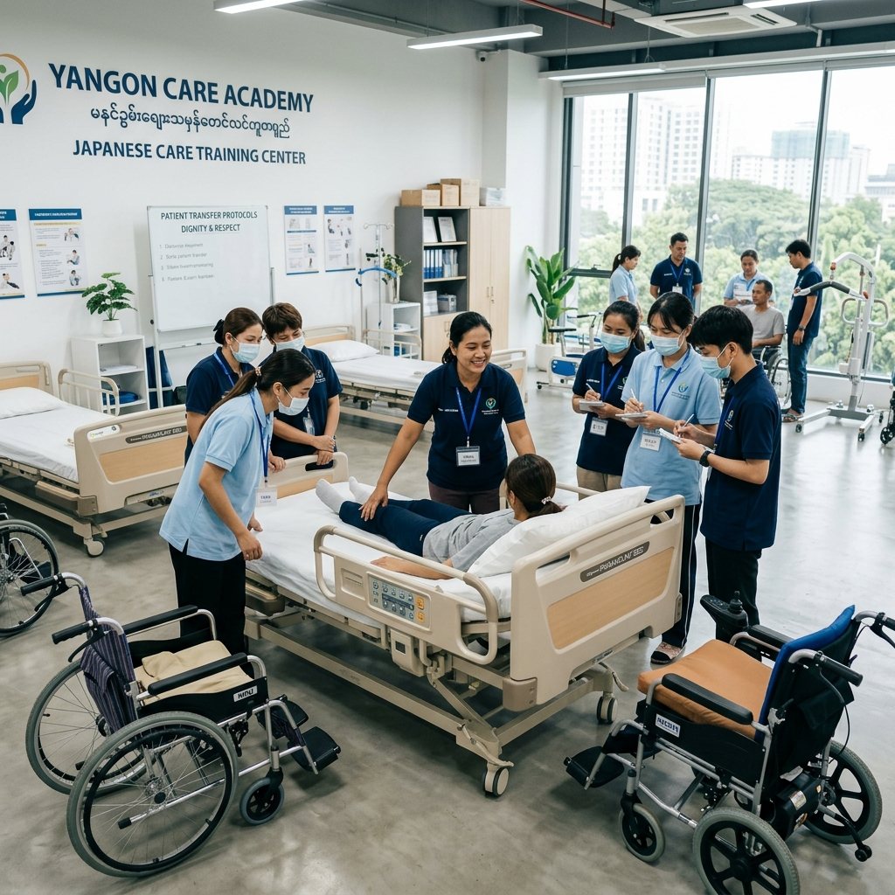
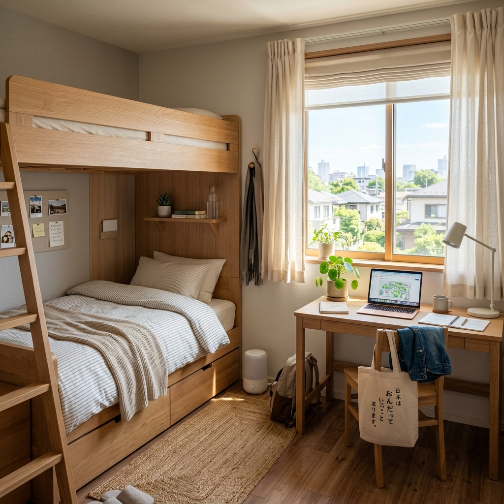

「日本語は通じる？」「現場での指導が大変…」「生活トラブルは？」
そんな介護事業者様の不安を、ヤンゴン現地訓練校での実技研修、介護歴25年の指導ノウハウ、福岡の安心ドミトリーで全て解決します。
人手不足の解消には外国人材が不可欠と分かっていても、採用・受入には多くのハードルが存在します。
「ベッドから車いすへの移乗」など、介護の基本動作を教える余裕が現場スタッフになく、かえって負担が増えてしまうのではないか。
「指示が通じずミスが起きる」「入居者様とのコミュニケーションがうまくいかずクレームになる」などの介護事故や関係性への懸念。
「ただの穴埋め人員」として受け入れると指導が行き届かず、モチベーションが低下し日本人と同様に早期離職してしまう心配。
賃貸アパートの手配、ゴミ出しルールや騒音などの近隣トラブルへの対応など、業務外でのサポート・管理が負担になる。
入居施設で「いつから夜勤を任せても大丈夫なのか」、また5年間の特定技能期間でどのようなステップを踏ませれば良いか分からない。
私たちは単なる「紹介会社」ではありません。長年の介護施設運営実績と現場指導ノウハウを持つ専門家集団として、貴施設の負担を最小限に抑え、スタッフが戦力として定着する受入体制を構築します。
日本語力、現場スキル、メンタルケア、そして住環境まで。貴施設の負担を徹底的に軽減するための支援システムです。

多くの送り出し機関では座学と日本語教育のみですが、当組合はミャンマー・ヤンゴンに独自の介護技術研修施設「ミカド東京」（2026年夏オープン予定）を設立。
日本から「電動ベッド」や「車いす」などの実際の介護用品を送り、入国前に1週間〜10日間の基礎実技訓練を実施します。
当組合の代表・西川は、実際に日本の介護現場で25年以上にわたり、外国籍職員の指導や受入体制構築を行ってまいりました。
受け入れる施設側の知識不足によるトラブルを防ぐため、受入前に文化・習慣・指導法に関する事前研修を徹底して実施します。
留学生として来日し、日本の介護福祉士国家資格を取得した外国人スタッフが支援員として在籍。
同じ境遇を乗り越えた先輩だからこそ、新入職員の些細なメンタル変化に気づき、母国語で的確な相談相手となることができます。
受け入れる施設様に「採用業務以外の負担」を感じさせないための、インフラと環境を整えています。
ミャンマー・ヤンゴン市内に設立した、特定技能介護に特化した独自の研修施設。日本国内で実際に使われている「電動ベッド」や「車いす」などの介護用品をそのまま現地に導入しています。
入国前教育プログラム： 1週間〜10日間の実技特訓

福岡事業所対応福岡市東区香椎（JR香椎駅から徒歩3分）にある自社運営のドミトリー。 アパート契約や初期費用、生活管理（騒音・ゴミなど）の負担を施設側に一切かけません。24時間スタッフが常駐する安全・安心のドミトリーです。
初期費用：3万円（権利金のみ） / 月額：3万円
日本語レベルと採用人数を選ぶだけで、初期費用と月々のランニング支援料金の概算を算出します。
※渡航時期や航空券代により「初期実費」は変動します。
※3か月以内の早期自己都合離職は紹介料の50%、6か月以内は25%を返金する保証制度がございます。
介護特定技能の受入にあたり、多くの施設長様からいただく質問をまとめました。
東京医療介護用品事業協同組合の代表紹介と組合概要
私はこれまで25年以上にわたり介護現場に従事し、現場が抱える深刻な人手不足と、それに伴う焦りや不安を肌で感じてまいりました。同時に、多くの外国人スタッフの教育と定着化に挑戦し、様々なトラブルやその解決方法を実践してきました。
現場で最も起こりやすいトラブルは、受け入れる側が知識を持たず、外国人スタッフを「ただの労働力」として扱ってしまい、指導不足で離職を招くケースです。私たちは、現地での実技訓練、施設の指導マニュアル提供、資格取得を見据えた教育設計など、現場が「本当に助かる」仕組みを提供します。
福岡での新しいスタートにあたり、地元の介護事業者様の安定的な運営に全力で貢献いたします。
介護特定技能外国人の採用に関するご質問、資料請求、お見積りはお気軽にご相談ください。
送信が完了いたしました。担当スタッフより2営業日以内に折り返しご連絡いたします。